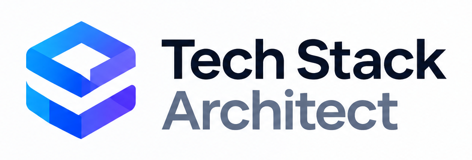

Architecture starts with good reasoning
Design a stack you can explain.
Design, validate, understand, and generate production-ready technology stacks.
Explainable recommendations
Deterministic validation

Architecture starts with good reasoning
Design, validate, understand, and generate production-ready technology stacks.